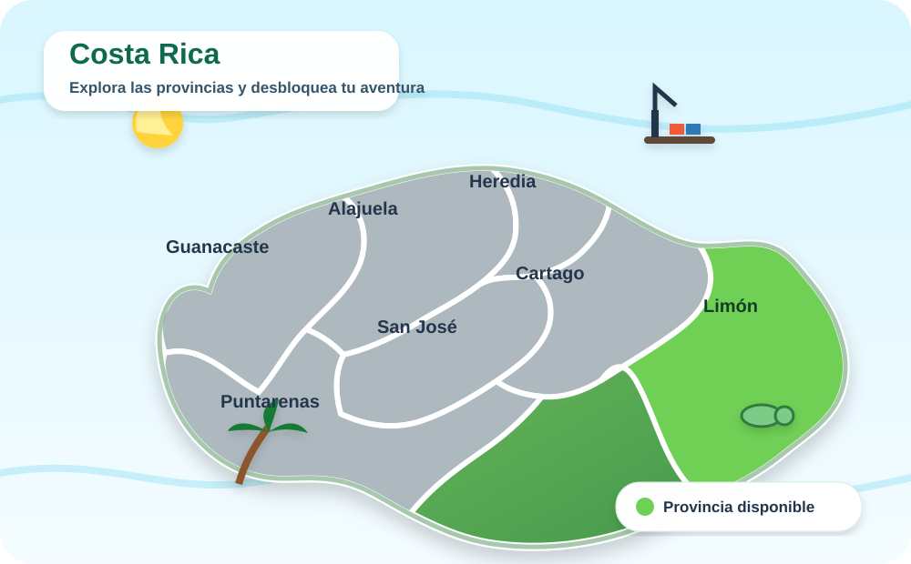
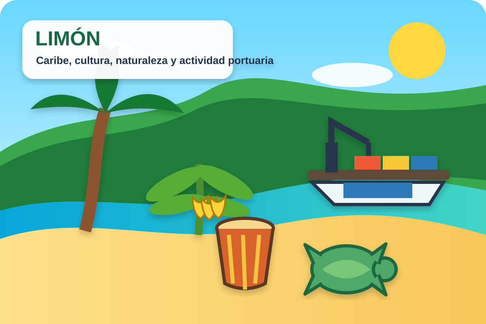

Feria Científica EXPOTEC 2026
Explora, aprende y conquista las 7 provincias de Costa Rica
Recorre el país de forma divertida e interactiva. Descubre datos, utiliza realidad aumentada, responde preguntas y acumula puntos.
Durante la experiencia WebAR, el navegador solicitará permiso para usar la cámara.
Ruta nacional
Mapa de Costa Rica
Limón está disponible. Las demás provincias se habilitarán progresivamente.
Progreso
0 de 7


Provincia 1
Limón
Limón se ubica en la zona este y noreste de Costa Rica, junto al mar Caribe. Destaca por su riqueza natural, diversidad cultural y actividad portuaria.
CapitalLimón
LitoralCaribe
Preguntas6
Puntaje máximo60
Desafío de Limón
Pregunta 1 de 6
0 puntos
Provincia completada
¡Misión Limón finalizada!
0/60 puntos
En la versión final, al completar las siete provincias se generará el certificado de participación en PDF.